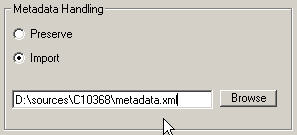

You are advised to fill in a value in the prefix field. The Regenerator will use the value in this field in the filenames.
You are advised to fill in a value in the prefix field. The Regenerator will use the value in this field in the filenames. The Regenerator takes a Daisy DTB of formats Daisy 2.0 or 2.02 as input, and attempts to refresh, fix and update the content of the DTB files so that they comply to the 2.02 specification.
When the regeneration process has been completed, the Regenerator can optionally call the Daisy 2.02 Validator to validate the result.
go to table of contentsThe Regenerator engine is built so that new fixes/corrections can be added as they are found in existing DTBs. The list below does not necessarily include all fixes that the Regenerator performs in the version you are currently using.
The Regenerator makes an attempt to output a new version of the DTB. Under certain circumstances if will fail; the failure will result in either that no new files are output at all, or that files are output with partial fixes included.
If the regeneration process is successful, the following modifications will have been performed on the DTB.
The binary distribution of the Daisy 2.02 Regenerator is made available by the Daisy Consortium at no cost. The use of the application is entirely at your own risk.
The Daisy 2.02 Regenerator is available under the GPL license. Read more at http://www.gnu.org/licenses/licenses.html#GPL.
Visit dsidtb.sourceforge.net for further information on the Daisy Software initiative (DSI).
go to table of contentsThe Daisy 2.02 Validator can be used within the Regenerator application to validate the output. For more information, visit www.daisy.org/tools/validation.asp.
The Regenerator is built to work on single volume DTBs. It does not support multi volume DTBs. For this reason, the Daisy 2.02 Multivolume DTB Splitter/Merger can be used to (temporarily) merge Multivolume DTBs prior to regeneration.
For more information, visit www.daisy.org/tools.
go to table of contentsThe Regenerator will run under Windows™ 2000 and XP. It may also run under Windows™ 98SE and ME; however, these operating system versions are not explcitly supported.
Before installing the Regenerator you need to make sure to have Microsoft XML Core Services(MSXML) 4.0 SP1 or higher installed. If you do not have this component installed, go to the following web adress for download:
Starting in section 3.2 below, the functionality and options of the Regenerator are explained in detail. This section is a Quick Route™ for those of you who want to get started sooner rather than later.
The Jobs Tab (CTRL+F1) is the primary tab of the Regenerator interface. This is where you add DTBs to be regenerated, and monitor the progress during the regeneration process.
The left part of this tab consists of the batch list grid. The window at the right is the log window.
The batch list grid lists all DTBs added for regeneration. You can add one DTB at a time by pressing the Add Job button at the lower left of the main window, or by using CTRL+A. It is also possible to add several jobs at once; see Importing a job batch list below.
During the regeneration process, the log window displays progress information and sometimes also warning and error messages. Note that a log file, containing the same - and additional - information, is also stored on disk for later review.
Several jobs can be added simultaneously by pointing the Regenerator to a job batch list. The job batch list is opened with the Add joblist button at the lower left of the main window, or by using CTRL+L.
The job batch list is an xml formatted document that has to comply to a certain set of rules in order to be understood by the Regenerator. See Appendix 1 for full information on job batch list formatting.
go to table of contentsThe Input DTB Properties area contain fields that are very important to set up correctly before running the job.
In the DTB box, you must select the type of DTB. (See DAISY structure guidelines for more information.)
In the Input charset field, you must select the characterset used in the input DTB. Note that this is not a selection of the wanted output characterset, but the characterset used before regeneration. See Appendix 3 for further recommendation.
For convenience, some commonly used charactersets are supplied as predefined choices. These are western, Shift_jis, big-5 and utf-8. If the input DTB characterset is not one of these, select other, and then select the characterset from the list.

Note that for input DTBs using a western characterset (select Western in the dropdown list), the output DTB is converted to use the XML default characterset encoding "utf-8" (unicode). This feature is not an option.
If your DTB are using a western characterset (windows-1252), but you dont want to change characterset to utf-8, select Other in the dropdown list, and choose windows-1252 in the manual selection list. This method is useful if you intend to continue editing the DTB after Regeneration using a legacy tool that not supports unicode.
Remember to confirm that no characterset misinterpretation has taken place by manually inspecting the DTBs textual content after regeneration. This is most easily done by opening the NCC or content document in an internet browser. Note that utf-8 encoded textfiles may appear to be erroneous when viewed in a text editor. This normally depends on the fact that the text editor does not support decoding utf-8.
go to table of contentsThe Metadata handling area of the Job Properties tab lets you decide whether to preserve the existing bibliographic metadata, or whether to import a new bibliographic metadata set from an external source.
If you want to preserve the existing metadata, check the preserve radiobutton. This will cause the Regenerator to analyze the existing metadata and attempt to convert it to a syntax that complies with the Daisy 2.02 specification. Note that this analysis is not always 100% successful, because of certain incongruencies between the Daisy 2.0 and Daisy 2.02 metadata definitions.
If you want to import an entirely new bibliographic metadata set, check the import radiobutton. Then point to the external file that contains the data you want to import by using the browse button. (Here you may use the path variables explained below.)
Note that the preserve and import settings only apply to bibliographic metadata. DTB-related metadata, such as those describing total playback time, filecount, structure depth, etc are always recalculated by the Regenerator.
The metadata import document has to be structured in a certain way for the import procedure to work correctly. See Appendix 2 for detailed instructions on how to create such a document.
go to table of contentsThe Regenerator can perform a sequential rename of the SMIL and audio files in the DTB. Enable this feature by checking the sequential rename checkbox.
You are advised to fill in a value in the prefix field. The Regenerator will use the value in this field in the filenames.
If you for example set the prefix field to "book", the resultant filenames will be as follows:
book_0001.mp3
book_0002.mp3
book_0003.mp3
etc...
If you set no value for prefix, the Regenerator will use the default prefix "dtb".
Note that the Regenerator will change and/or truncate any characters that do not comply with filename and URI specifications. If you for example add the prefix "smålands stenar", the prefix actually used will be "smaalands_stenar". You are advised to use only the characters "A-Z", "a-z", "0-9", "_" and "-" in this field.
The option Use numeric portion of id will take the value of the dc:identifier meta data item, and use any numeric value found there converted to hexadecimal as the prefix. If the dc:identifier value does not exist, or does not contain any numeric value, the Regenerator will use the default prefix "dtb".
go to table of contentsThe Output DTB Destination area of the Job Properties tab lets you choose the destination of the output DTB (assuming that the regeneration process passed without critical failures). You may choose to overwrite the existing book, or to move the result to another location, leaving the original book untouched.
The options are:
This option will perform the overwrite process as described above, and after that it will move the DTB folder to a destination specified in the path field at the bottom of the area.

Here, you may make use of the path variables to dynamically create destination folders. The example below shows how the *dtbid* variable is entered to the path field.

When using the Same folder option as the Output destination, the Regenerator will perform a backup procedure before overwriting the original files.
The backup procedure creates a subfolder in the DTB directory called "rgn_backup". In here it copies all non-audio fileset members, that is, the original NCC document, SMIL files, text content documents, master smil document, images, etc.
To save space and time, audio files are not copied. Instead (and only if the sequential rename option has been selected), an xml file called audioRename_nfo.xml is created, which contains the original and new audio filenames.
If you for some reason want to revert the DTB to its original state, perform the following steps.

If you press the Set all jobs to these settings button, a dialog will appear that allows you to select which of you current job settings shall be applies to all jobs in the batch list.
If the Validate job after regeneration checkbox is checked, the DTB will automatically be validated after regeneration. The results of the validation are displayed in the Log window and in the Log file.
You may also use the Validation results to sort the output DTBs - see Example of how to use the path variables below.

The three first checkboxes in the Validator Log Settings area determine the amount of validator verbosity in the result messaging. If check the fourth checkbox, Create standalone Validator report for each job is checked, a report document containing only the Validator messages (that is, not the Regenerator messages) will be created in the path specified in the Validator report savepath field. Note that you may use path variables to define the output destination.
The Validator report output here can be opened in the Daisy 2.02 Validator user interface for further analysis and editing of the DTB.
go to table of contentsIf the Synchronize settings with validator software checkbox is checked, the Regenerator will use the settings and options you have specified in the Daisy 2.02 Validator user interface - if any. If the checkbox is unchecked, you may specify the following validation settings manually:
The three path fields should contain the following information:
| Name | Description |
|---|---|
| Externals directory | The location of the document type definition (DTD) and attribute document type definition (ADTD) files. This path defaults to the 'externals' directory found in the validator install directory. |
| VTM Directory | The location of the Validator Test Map (VTM) document. This path defaults to the Validator installation directory. |
| Temp directory | An non writeprotected location where the validator can save temporary files |

The Default save path and Default meta location set the default location for DTB output and meta import file respectively. These will be applied to each job added to the Job list.
The Halt on regeneration/file rendering error determines whether the Regenerator shall break or continue to process jobs in the batch queue when a critical error occurs in one of the Jobs. If this checkbox is checked, the Regenerator will proceed with the next Job in the queue after displaying a related error message in the Log Window.
Checking the PB2K/TK NCC Layout fix checkbox will change the pretty print routine for the NCC document for compatibility with the Playback 2000 software and the Plextalk TK series of hardware players. To ensure playability in these devices, you are recommended to enable this option.
If this option is enabled, the Regenerator will add a Cascading Stylesheet link to each XHTML document (NCC, Content document) where no previous CSS reference exists.
The Regenerator will look inside the resources subfolder of the installation folder for a CSS document to include. One css document ("default.css") is included here by default. You can replace this with your own stylesheet by removing the "default.css" document and adding another one. The only requirement is that the CSS document has the extension "css".

The advanced fix area of the Advanced Settings tab includes a series of Regenerator actions that are not always desired to be performed. Therefore you have here the option to disable these actions.
The Adjust invalid smil par elements option will locate smilfiles where the first par element is not referenced by an NCC heading, and move the par element to the end of the previous smilfile (if existing).
Further, the Adjust invalid smil par elements option will find any par elements in the SMIL file that contain duplicated text elements. It will then try to move the duplicated events to a newly created preceeding par, and associate this text event with a short silent audio clip (0.8 seconds long).
These fixes will make the SMIL file valid to the specifications, and it will also solve the problem where it is impossible in a player to "move backwards" using for example "previous page" as navigation mode.
The backside of the fix is that short silent audioclips are added to the presentation. If the book is encoded in mp3 format, the Regenerator will try to add an audiofile of the same bitrate as the original audio. Still, it means that the 1:1 relationship between audiofiles and smilfiles is broken. Although a 1:1 relationsship is not required by the specifications, some older playback devices may not handle this in a satisfactory way.
The Rebuild link structure option will recreate the whole pointer structure in the DTB fileset. Each id will be given a new value, and each link that points to this id will reflect the change.
Although case inconsistencies in id and URI values are handled elsewhere (the case fix feature is not an option), this feature will help eliminating duplicate id instances in documents. Further, since the renaming is done using a predefined naming scheme - new values always begin with "rgn_" - it becomes easier to manually locate erroneous constructs within the book that may remain after the regeneration process. Any fragment value that does not begin with "rgn_" indicates that something weird is going on.
This option also eliminates any invalid characters within id and URI values.
The Make True NCC Only option will convert the DTB fileset so that any auxilliary XHTML document is removed. The term "true NCC only" refers to one of the two kinds of NCC-Only DTBs that exist;
Converting the DTB to true NCC only is beneficial for two major reasons:
This option (turned off by default) will disable all SMIL fragment references in the NCC and XHTML Content documents that do not resolve. The disabling is done by converting the items into comments. This means that although they are still there for a technician to troubleshoot, the will not be available for (bound to fail) navigation in a playback device.
Assume that the following NCC item points to void:
<h4 id="heading_000033" class="section">
<a href="dtb_0003.smil#bookid_000003x">Karl Marx</a>
</h4>
If the Disable broken NCC links option is enabled, the Regenerator will convert the item into the following;
<!-- <span class="disabled">
<h4 id="heading_000033" class="section">
<a href="dtb_0003.smil#bookid_000003x">Karl Marx</a>
</h4>
</span> -->
If NCC links are actually disabled during the regeneration process, the Regenerator log will issue a warning message.
If the Attempt estimation first option is enabled, the Regenerator will try to estimate the original target position of the broken link, and reinstate it. If it fails in this estimation, the link will be disabled as described above.
The Regenerator will issue a warning message for each estimated and/or disabled link.
In DAISY 2.02 there are two positions within a SMIL file to which other documents (NCC, Content documents) can point, the <par> element and the <text> element. The Point SMIL targets to option lets you decide which one of these should be used. The options are:
If the Merge short first phrases option is enabled, the Regenerator will attempt to merge short audio phrases occuring first in an audio sequence. This means that "silent" phrases that sometimes occur before heading or page announcements will be eliminated.
The four sliders below the merge short first phrases checkbox determine the behavior of the short phrase detection algorithm - here the values are set that decide when a phrase is to be considered merge matter.
<seq>
<audio src="audio.mp3" clip-begin="npt=10.123s" clip-end="npt=10.245" />
<audio src="audio.mp3" clip-begin="npt=17.123s" clip-end="18.387s" />
</seq>
Note how the first phrase ends at 10 seconds, while the second phrase begins at 17 seconds; merging these would not be a good idea.
The log settings tab save path field allows specifying where the Regenerator Log is to be saved. Note that you can not use the Path variables here. Also note that you should point to a folder only; and omit the filename.
If the verbose log option is enabled, the Regenator log will include large amounts of information. If the option is disabled, the Regenerator log will only include warning and error items.
go to table of contentsThe Log that is saved to disk is XML formatted. This means that it can be traversed and analyzed using XML processing.
Note that the same log file can be used for several Regenerator Jobs, even between sessions; the Regenerator will append data to this file, not overwrite.
In the case several jobs have been logged to the same Log file, you will, in order to make the file well-formed, need to manually add a root element. In some cases, you will need to add encoding information as well.
Log file prior to manual modification:
<job>
[...]
<job>
<job>
[...]
<job>
Log file after manual modification, adding a root element and encoding information:
<?xml version="1.0" encoding="windows-1252"?>
<root>
<job>
[...]
<job>
<job>
[...]
<job>
</root>
go to table of contents
The regenerator makes use of path variables to enable smooth handling of input and output data. This is especially useful when running the Regenerator in batch mode.
The different path variables are:
dc:identifer meta data value of the DTB. If neither dc:identifer (nor ncc:identifer) exist, the value is set to "unknown".A batch job is set up with four books to be regenerated in one pass. For all these books, the metadata import path is set to "*fulldtbpath*\metadata.xml". This means that for every book regenerated, the Regenerator will look in the DTB folder for a file called "metadata.xml" and attempt to import the data held there.
If instead the metadata import path is set to "D:\metadata\*dtbid*\metadata.xml", the Regenerator will expect a subfolder of the "metadata" folder whose name is the same as the dc:identifier of the book. For example, the metadata folder may look like this:
D:\metadata\se-tpb-c12456\metadata.xml
D:\metadata\se-tpb-c12236\metadata.xml
D:\metadata\se-tpb-c12223\metadata.xml
D:\metadata\se-tpb-c12224\metadata.xml
Further, for all books in the batch job, the output DTB destination path is set to "D:\books\*validationresult*\*dtbid*\". This means that all books that pass through the Regenerator successfully will be placed in a folder carrying the dc:identifier value of the DTB metadata. Each such folder will then in its turn be placed in a folder describing the result of the validation. After the batch job has been completed, the DTBs may have been placed as below.
D:\books\pass\se-tpb-c12456\ncc.html
D:\books\pass\se-tpb-c12236\ncc.html
D:\books\warning\se-tpb-c12223\ncc.html
D:\books\error_critical\se-tpb-c12224\ncc.html
go to table of contents
The Job batchlist root element is <joblist>. <job> elements occurs as children of <joblist>. Various properties can be set by adding subelements to the <job> element;
0 (audioOnly) 1 (audioNcc) 2 (audioPartialText) 3 (audioFullText) 4 (textPartialAudio) 5 (textNcc)
0 (western) 1 (shift-jis) 2 (big5) 3 (utf-8) 4 (other, see subcharset)
If a property is not set the regenerator will insert it using the default value for the specific property. By declaring the optional <default> element, you can set which values to default to. This element is used exactly like the <job> element.
Job batch list example:
<joblist>
<default>
<dtbtype>1</dtbtype>
<!-- sets the dtb type to audioNcc for all jobs in list -->
<charset>0</charset>
<!-- sets the charset to western for all jobs in list -->
<seqrename>true</seqrename>
<!-- enables sequential rename for all jobs in list -->
<usenumeric>false</usenumeric>
<!-- sets the "use numeric portion of dc:identifier
as rename prefix" to false -->
</default>
<job>
<nccfile>d:\dtbs\book1\NCC.HTM</nccfile>
<metafile>d:\dtbs\book1\meta.xml</metafile>
<prefix>C10972</prefix>
</job>
<job>
<nccfile>d:\dtbs\book2\ncc.html</nccfile>
<metafile>d:\dtbs\book2\meta.xml</metafile>
<prefix>C10873</prefix>
</job>
</joblist>
Note that a job batchlist template called "batchlist.xml" exists in the "resources" subfolder of the application installation folder.
go to table of contentsThe metadata import document has a syntax almost identical to the syntax of the <head> element with <meta> children in XHTML and Daisy 2.02. The rules are:
Example:
<root>
<meta name='dc:identifier' content='se-tpb-c23671' />
<meta name='dc:date' content='1970-09-17' scheme='iso8601'/>
...
<meta name='ncc:narrator' content='Brian Burrows'/>
<meta name='prod:recEngineer' content='Jesper Klein'/>
</root>
ncc:totalTime is added to the metadata import set, it will be ignored. (The list of elements that are deflected in this way is held in the file "forbiddenMeta.xml" that exists in the "resources" subdirectory of the application folder.)
Remember to specify character encoding in the prolog of the document in case the used encoding is other than utf-8 or 7bit ascii. In the following example, the meta data import document uses western characters, and was created on a Windows™ platform.
<?xml version="1.0" encoding="windows-1252"?>
<root>
<meta name='dc:identifier' content="se-tpb-c23671" />
...
</root>
This is a listing of the most common charactersets used in Daisy DTBs.
Note that the preexisting characterset information inside the DTBs (in metadata sections for example) is seldom true; you should not rely on this information. For example, it is very common that the meta element charset contains "iso-8859-1". This is almost never a true statement.
Instead, you should take the time to find out which characterset is actually used and provide that information to the Regenerator. Only then can a satisfactory regeneration result be expected.
The list assumes that the DTB was created using one of the existing Daisy DTB production tools, such as LpStudio/Pro, LpStudio/Plus, Sigtuna DAR 2, Sigtuna DAR 3, TIPS, WIPS, MyStudio PC, or Plextalk Recording System.
windows-1252. In the Regenerator, select either "western" in the Input Charset dropdown box - this will interpret the input as windows-1252, and output utf-8. If you do not want to convert the encoding to utf-8, select "other" and then choose "windows-1252" in the adjacent dropdown box.Shift_Jis (which can also be labeled as windows-932). In the Regenerator, select "Shift_Jis" in the Input Charset dropdpown box.windows-874 (which can also be labeled as TIS-620). In the Regenerator, select "other" in the Input Charset dropdpown box, and then choose "windows-874" in the adjacent dropdown box.kcs5601. In the Regenerator, select "other" in the Input Charset dropdpown box, and then choose "kcs5601" in the adjacent dropdown box.big5. In the Regenerator, select "Big5" in the Input Charset dropdpown box. Note: at the time of writing, support for GB2312 is not tested.If the information provided here is not sufficient, please contact the Daisy Support Emailing list.